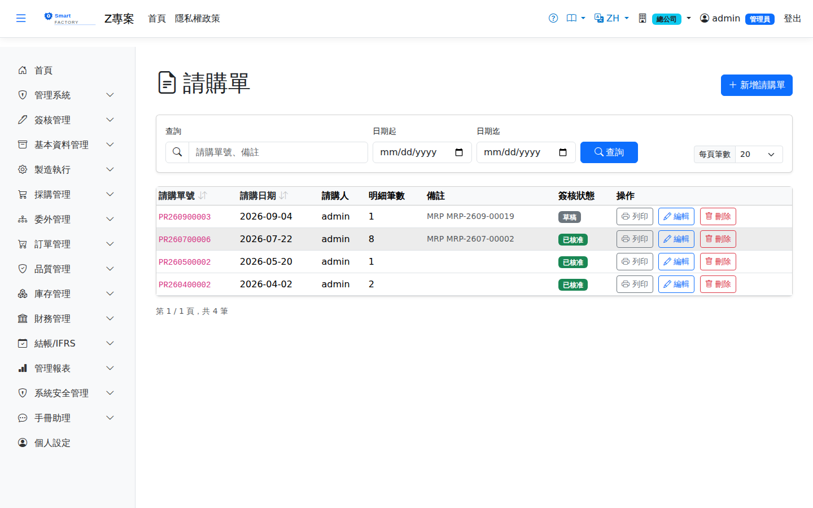

請購單Purchase requisition
路由：/PurchaseRequest | 採購需求彙整與簽核Route: /PurchaseRequest | Collecting demand and approval
使用單位或 MRP 產生的採購需求先立請購單，經簽核核准後由採購人員轉開採購單。請購行會追蹤已轉採購量，全數轉單後自動結案。Demand from user departments or from MRP is first raised as a purchase request; once approved, buyers turn it into a purchase order. Request lines track the quantity already ordered and close automatically when fully ordered.

請購單畫面截圖（示意，實際欄位/資料依權限與查詢條件而異）Purchase request screenshot (illustrative; actual fields and data vary by permission and query criteria)
查詢Search
1
查詢列輸入條件後點「查詢」；欄位標題可點擊排序，清單下方有分頁導航。Enter your criteria on the query bar and click "Search"; column headers can be clicked to sort, and the paging controls sit below the list.
單據狀態Status
| 狀態Status | 說明Guide |
|---|---|
| 草稿 DraftDraft | 已建立未生效，可自由編輯、刪除；需簽核者於此狀態送審。Created but not yet effective; can be freely edited or deleted, and submitted for approval from this status. |
| 待審核Pending approval | 已送審等待簽核，不可編輯；可撤回改回草稿。Submitted and waiting for approval; it cannot be edited, but it can be withdrawn back to draft. |
| 已確認 ConfirmedConfirmed | 簽核核准（或免簽核直接確認）後生效，等待後續作業/過帳。Effective once approved (or confirmed directly when no approval is required), waiting for the next step or for posting. |
| 已過帳 PostedPosted | 庫存/帳務已入帳，單據不可再修改。Stock and accounting have been posted; the document can no longer be changed. |
| 已作廢 VoidVoid | 反向沖銷已過帳內容；作廢原因需留存，不可復原。Reverses what was posted; the void reason is kept and the action cannot be undone. |
作業流程Process
建立請購單Creating a purchase request
1
點「新增」開啟側欄，填寫請購單表頭與明細行後儲存（草稿）。Click "Add" to open the panel, fill in the purchase request header and lines, then save (as a draft).
2
點「送審」進入簽核流程；核准後單據自動轉「已確認」。若免簽核，直接點「確認」。Click "Submit" to start the approval flow; the document turns to "Confirmed" once approved. Where no approval is required, click "Confirm" directly.
後續作業Follow-up actions
1
已確認/已過帳單據可點「列印」產生含 QR Code 的正式表單（新分頁開啟）。Confirmed and posted documents can be printed with "Print", producing the official form with a QR code in a new tab.
2
已過帳單據如需沖銷，點「作廢」並填寫原因；系統產生反向庫存/帳務異動。To reverse a posted document, click "Void" and enter a reason; the system creates the reversing stock and accounting entries.
欄位說明Field reference
表頭Header
| 欄位Field | 說明Guide |
|---|---|
| 請購單號PR No. | 系統採番，不可修改Numbered by the system; not editable |
| 請購日期Request Date | 必填Required 提出請購的日期Date the request was raised |
| 請購人Requested By | 提出請購的使用者，系統自動帶入User raising the request, filled in automatically |
| 備註Notes | 整張請購單的補充說明Notes for the whole purchase request |
明細Lines
| 欄位Field | 說明Guide |
|---|---|
| 序號Seq | 明細行序Line seq |
| 品號Item | 必填Required 要採購的料件Item to be purchased |
| 預交日期Delivery Date | 必填Required 希望到貨的日期；MRP 產生的請購以需求日減前置天數推得The date the material is needed; MRP-generated requests derive it from the demand date minus the lead time |
| 請購數量 / 採購單位Req. Qty / Purchase UOM | 必填Required 請購數量與採購計量單位（可與庫存單位不同）。選了品號後，單位只列該品號可用的單位（庫存單位與查得到換算的單位，預設採購單位）。Requested quantity and purchase unit of measure (which may differ from the stock unit). Once a product is chosen, the unit list shows only the units usable for it (its stock unit and units that convert to it; purchase unit preselected). |
| 結案Close | 勾選後該行不再等待轉採購單；未結案且未轉完者持續列為待處理Once checked, the line no longer waits to be turned into a purchase order; open lines that are not fully ordered stay in the pending list |
由 MRP 展開產生的請購單會記錄來源 MRP 執行單號，重跑時據此去重，不會重複開單。A purchase request generated by MRP records the MRP run number it came from, which is used to de-duplicate on a re-run so the request is never raised twice.
相關畫面Related screens
MRP 展開的外購建議可直接轉成請購單，來源訂單以 pegging 可追溯。Buy suggestions from an MRP run can be turned into purchase requests directly, with the source order traceable through pegging.